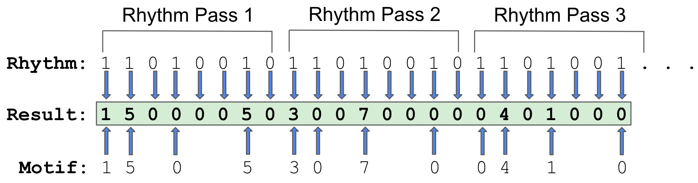

Tables & Waves
Vector Melodies
Motif
Rhythm
Shifts
About Melody Vectors
There are a lot of sources of inspiration for this kind of melodic data processing, and the main one is based on processing lists of note data in the musical software Max. In particular, if you get your head around the [zl] bundle of objects in Max [1] or read through Gregory Taylor's Step by Step [2], you might find yourself seeing bespoke melodic data structures just waiting to be poked, prodded and tweaked.
There is probably an established name for this and I just don't know about it. I refer to these kinds of methods for melody evolution as "Melodic Vectors" because I am taking inspiration from the simplest forms of vector operations from linear algebra...but with a few caveats that will be discussed below.
See the lecture notes Basic Linear Algebra Review [3] for the following definition:
A vector is an n-tuple (an ordered set) of numbers, e.g. a member of R^n (where R stands for the real numbers). Thus two-dimensional vectors are elements of the set {R × R}, e.g.
[1 2]or[-43.2565 -114.6471]or[2.8768e+11 0].
The authors naturally focus on geometry as that is what vectors are commonly used to model (e.g., lines in 2- or 3-D space). However, for our purposes, a melodic vector will simply be a list/array of numbers that represent some kind of sequence of musical notes that can be transformed. Those numbers could be MIDI pitch numbers, for example. For the melody generator above, I am using scale degrees. For the sake of simplicity of demonstration, there is a menu above that lets one choose either the Major or Minor western scales. These scales both have seven notes and so the scale degrees are the numbers 1-7. For the Major scale, the scale degrees 1, 2, 3, 4, 5, 6 and 7 correspond to the notes in ♪ do re mi fa so la ti ♪. For a seven note scale, the 8th scale degree is the same note as the root note, represented by scale degree 1, only raised by one octave (i.e., the next ♪ do ♪).
Now let's consider why the mathematical concept of Vector is a better one than, for example, the computer programming concepts of List or Array. It all comes down to change and movement. In math, vectors have operations like addition or multiplication and it is extremely useful to merge those operations with a few musical concepts, such as transposition. Another general term I will use for an operation on a melodic vector will be a "transformation" because these operations generally will transform a melody into a new melody. With these tranformations, the original melody, which might be thought of as the core identity for later versions, will often still bleed through in the transformed, derivative melodies. I find this to produce a useful push/pull between stasis and change.
In the melody generator above, these are the melody vector transformations. For the sake of explanation, the order is switched...
Shift (Transpose)
The shift transformation transposes notes by mathematical addition. For example, if using MIDI note numbers, a shift by the number 12 transposes a note by one octave. When using MIDI note numbers, a shift of 1 will raise any note by a half step. Similarly, if using scale degrees, as in the example above, and the scale in question has 7 notes, then shifting by 7 will raise a note one octave because the first note in a scale is degree 1 and adding 7 arrives at degree 8. In call cases, a shift of 0, as would be expected mathematically, leaves the original note number intact.
The scale degree case is interesting because, unlike the MIDI note pitch numbering system, a shift by 1 will have a different effect on the resulting pitch (or frequency). For the western scale modes like Major/Ionian and Minor/Aeolian the adjacent scale degrees are sometimes 1 half step apart and sometimes 2 half steps apart.
How Does Transposition Qualify as a Vector Operation?
So at this point, it is not entirely clear how transposing or shifting notes qualifies as a vector operation. Before moving on to the other definitions, let's use the Shift transformation as an example. With the default settings that this page loads with, there is a series of dropdown menus that represent a Motif written as a sequence of scale degrees and/or rests. The rests are written as R in the menus for the Motif row, but in my system, I assign special meaning to the number 0 and it represents a melodic rest. Therefore, as a melodic vector, this motif is represented as the number sequence:
[ 1 5 0 5 3 0 7 0 0 4 1 0 ]
Note: the spacing here is just visual grouping of the 12 notes as 4 groups of 3 scale degrees for humans. No math-y significance.
In the third row of controls, labeled Shifts, there is a sequence of transposition amounts. In this system of Melodic Vectors, the shifts/transformations are themselves another vector:
[ 7 7 0 0 7 0 0 0 0 0 7 0 ]
This means that applying these shifts to the motif is exactly equivalent to vector addition:
[ 1 5 0 5 3 0 7 0 0 4 1 0 ] + [ 7 7 0 0 7 0 0 0 0 0 7 0 ] -------------------------------------- [ 8 12 0 5 10 0 7 0 0 4 8 0 ]
This is the fundamental principle at play with melodic vectors: in addition to representing an original melody as a sequence, a list/array of notes, the melodic transformations should also be represented as sequences.
Rhythm
A Note on Defining "Rhythm"
There are many different notions of rhythm and this conceptualization for Melodic Vectors will not mesh with all of them. This definition is internal to this framework, a made up concept: the rhythm vector.The rhythm transformation changes a melody by inserting 0-to-many rests into it. As you might guess, this may not be what we would typically think of as a mathematical operation on a vector. The transformation does not use arithmetic, rather, it is more like a Boolean operation or a bitwise operation.
A rhythm vector is represented as a simple sequence of binary digits (1 and 0) where 1 represents On and enables a melodic note/step to pass thru it and 0 represents Off and interupts/disrupts a melody by inserting a rest. Hopefully this will become clear with an example, but first another digression...
Breaking with the Maths, cuz: OY! Art!
I noted above that there are a few caveats in terms of using the linear algebra concept of vectors. In the lecture notes cited above, Liberman and Isard state, "You can't add two vectors of different sizes." They also note that the MatLab software throws an error when trying to add vectors with different dimensions (number of elements).
For Melodic Vectors, we shall have no such constraint. Instead, a common looping interpretation can be used for combining musical vectors of different dimensions: wrap-around via modulo operation. In this case, the formula used to determine what number from a transformation vector (such as the shifts vector or the rhythm vector) is applied to a number in a melodic sequence will be something like:
shifts_vector[melody_index % shifts_vector.length]
For example, given a set/tuple of shifts with 3 numbers, [ 7 0 0 ], and a 5 note melody, [ 1 3 5 4 7 ], the combination should look like the equivalent of this:
[ 1 3 5 4 7 ] + [ 7 0 0 7 0 ] ----------------- [ 8 3 5 11 7 ]
Another break from the purely mathematical interpretration involves the shift vectors in particular. In the implementations that I use for shift transformations, rests from the melody will not be shifted. This means that if the motif that was used as input to the shift transformation had a rest step that lined up with a non-zero shift step, the result will still be a rest like this:
[ 1 0 5 ] (melody) + [ 7 7 0 ] (shifts) ------------ [ 8 0 5 ]
Another way to think about this is that Melodic Vectors are non-commutative mathematically, even for addition. I tend to think of this as due to the fact that in music, which is so fundamentally dependent on timing, the order in which things happens is critically important. Therefore, numerical representation of music is rather less numerical than we might think initially. For example, dimensional similarity should not be a constraint (the modulo case), nor should we think that order is irrelevant (shifts are applied to a motif, not the other way around). Also, the number 0 in this framework is not really a number, it is a special case that is interpreted as a rest when a given vector/sequence represents a melody.
That's just, like, my opinion for how it should work and I am sharing the details and links to code so you might make your own version should you feel differently...
Going back to the transformation that loads with this page, let's dissect the motif and its first transformation, the rhyhtm vector. The motif is the scale degrees [ 1 5 0 5 3 0 7 0 0 4 1 0 ] and the rhythm is represented by by the 8-element binary sequence [ 1 1 0 1 0 0 1 0 ].
 Figure: Rhythm vector transform diagram
See the figure above for a step-by-step diagram of how the transformation progresses. The rhythm is, in a sense, the primary vector that the transformation loops over as a control structure. As the algorithm loops over the rhythmic steps, when it encounters a 1/On step, it will pull the next element from the motif. When it encounters a 0/Off, it will insert a 0/rest. To complete a rhythmic transformation, the process will keep passing through the rhythm vector until all elements in the motif vector have encountered a 1/On rhythmic vector step.
Note that it is possible that a 1/On element in the rhythm, could pull a 0/rest from the motif, too. In the figure, the third 1/On step in the rhythm (which is step 4 of the rhythm because step 3 is a 0/Off in the rhythm) pulls the third step from the motif, which happens to be a 0/rest step. As you can see in the diagram, it takes just under 3 complete loops through the rhythm vector for the last motif step (a 0/rest after the scale degrees 4 and 1) to encounter a rhythmic 1/On step.
Change & The All Important Order of Operations
Now...if you are following to this point so that the basics of these two transformations makes sense, it is time to talk about how they interact with each other. Some experimentation reveals that the the order of transformations can be exploited for generating a melody that evolves by both rhythm and pitch.
The melody generator above illustrates this point when the box labeled Cycle Rhythm Thru is checked. Enabling this feature will cause the sequencer to change the rhythm with each pass through the loop. It does this by cycling the rhythmic vector's step length from 2 thru the number specified. Because the rhythmic vector transformation happens before the shift vector transformation, how the scale degrees get shifted changes with each pass thru the loop.
Let's step through the first two changes one iteration at a time. To do this manually, refresh the page (maybe Shift+Refresh if your browser is remembering any changed menus) to get to the original starting state. Then set the Cycle Rhythm Thru number box to 8 and set the Rhythm Length number box to 2 (it's lowest number). Then click the Generate button and notice how the sequence renders in the piano roll. Then set the Rhythm Length number box to 3 and click the Generate button again and look at the changed sequence in the piano roll.
So what's going on? As noted above, the default rhythm that loads on the page is [ 1 1 0 1 0 0 1 0 ]. When the length of those 8 rhythm steps is shortened to 2, it becomes [ 1 1 ] and because they are both 1/On steps, the motif passes thru the rhythm unchanged. The only rests in the sequence are the original rests in the motif itself. This means that the original motif is what gets passed to the next vector transformation, the shifts. As seen above, this becomes:
[ 1 5 0 5 3 0 7 0 0 4 1 0 ] + [ 7 7 0 0 7 0 0 0 0 0 7 0 ] -------------------------------------- [ 8 12 0 5 10 0 7 0 0 4 8 0 ]
However, once you change the Rhythm Length number box to 3 and click the Generate button again, the inputs to the shifts vector are different. The rhythmic vector, which is now [ 1 1 0 ], results in a new intermediary vector:
rhythm: [ 1 1 0 ] applied to: [ 1 5 0 5 3 0 7 0 0 4 1 0 ] results in: [ 1 5 0 0 5 0 3 0 0 7 0 0 0 4 0 1 0 0 ]
So when [ 1 5 0 0 5 0 3 0 0 7 0 0 0 4 0 1 0 0 ] then has the shifts vector applied, the numbers from the previous pass (Rhythm Length = 2) are no longer in their same positions and the shift transpositions happen to other notes:
[ 1 5 0 0 5 0 3 0 0 7 0 0 0 4 0 1 0 0 ] + [ 7 7 0 0 7 0 0 0 0 0 7 0 7 7 0 0 7 0 ] -------------------------------------------------- [ 8 12 0 0 12 0 3 0 0 7 0 0 0 11 0 1 0 0 ]
And as you may guess from the global Sequence Length parameter, this is shorted to 16 steps: [ 8 12 0 0 12 0 3 0 0 7 0 0 0 11 0 1 ]. As a reminder, this process is using scale degrees, not MIDI note numbers, so the 11th scale degree when the tonic/root is set to C3 and the scale is Minor or Major is F4.
Basic Implementations
Here is a JavaScript implementation to calculate rhythm and shifts vector transformations on a motif:
const applyRhythm = (melody, rhythm) => {
let transformedSequence = new Array();
let transformedSeqLength = calculateLength(melody, rhythm);
let processedStepIndex = 0;
for (let i = 0; i < transformedSeqLength; i++) {
let rhythmStep = rhythm[i % rhythm.length];
if (rhythmStep == 0 || processedStepIndex >= melody.length) {
transformedSequence.push(0);
} else {
transformedSequence.push(melody[processedStepIndex % melody.length]);
processedStepIndex++;
}
}
return transformedSequence;
}
const calculateLength = (melody, rhythm) => {
let rhythmHits = rhythm.filter(step => step != 0).length;
if (rhythmHits == 0) {
return 0;
} else {
let stepHits = Math.ceil(melody.length / rhythmHits);
return rhythm.length * stepHits;
}
}
const applyShifts = (melody, shiftPattern) => {
let transformedSequence = new Array();
for (let i = 0; i < melody.length; i++)
if (melody[i] == 0)
transformedSequence.push(0);
else
transformedSequence.push(melody[i] + shiftPattern[i % shiftPattern.length]);
return transformedSequence;
}
let motif = [ 1, 5, 0, 5, 3, 0, 7, 0, 0, 4, 1, 0 ];
let rhythm = [ 1, 1, 0, 1, 0, 0, 1, 0 ];
let shifts = [ 7, 7, 0, 0, 7, 0, 0, 0, 0, 0, 7, 0 ];
let motifWithRhythm = applyRhythm(motif, rhythm);
let shiftedMotifWithRhythm = applyShifts(motifWithRhythm, shifts);
console.log(motifWithRhythm);
console.log(shiftedMotifWithRhythm);
References
- Cycling74. "zl Reference - Max 8 Documentation." https://docs.cycling74.com/max8/refpages/zl
- Taylor, Gregory. Step by Step: Adventures in Sequencing with Max/MSP. Cycling '74, 2018.
- Liberman, Mark and Stephen Isard. "Basic Linear Algebra Review." Lecture notes from COGS 501 Mathematical Foundations for the Study of Language and Communication, Fall 2011. Department of Linguistics, University of Pennsylvania. https://www.ling.upenn.edu/courses/cogs501/LinearAlgebraReview.html